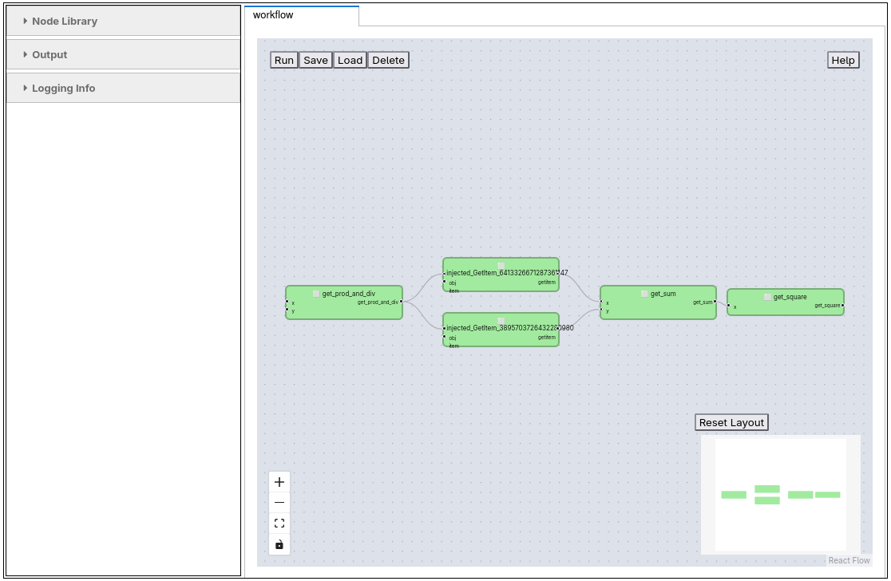
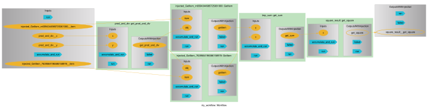

Arithmetic Workflow#
This notebook defines and reloads the arithmetic workflow with pyironflow .
The arithmetic workflow is the smallest example of the Python Workflow Definition (PWD). It does no real science. Instead, it shows the building blocks that every PWD workflow shares. The workflow combines three Python functions, which are defined in the workflow.py module next to this notebook:
Function |
Inputs |
Returns |
|---|---|---|
|
two numbers |
a dictionary |
|
two numbers |
the sum |
|
one number |
the square |
Written as a regular Python function, the workflow is:
def arithmetic_workflow(x=1, y=2):
tmp_dict = get_prod_and_div(x=x, y=y)
tmp_sum = get_sum(x=tmp_dict["prod"], y=tmp_dict["div"])
return get_square(x=tmp_sum)
In the PWD, a workflow is stored in three files:
workflow.py: the Python functions, which become the nodes of the workflow graph.workflow.json: the connections between those functions (the edges), plus the input values and the final output.environment.yml: the conda environment with the software the functions need. For this website it is shared by all three examples and lives in the root of the repository.
The same workflow is also implemented with other workflow engines, including AiiDA, jobflow and pyiron_base, on the Python Workflow Definition website. This notebook adds a visual programming environment to that list. pyironflow is a graphical user interface based on ReactFlow. It runs inside Jupyter and works on top of the pyiron_workflow workflow engine.
The notebook has two parts:
Reload workflow in pyironflow: load the existing
workflow.jsonintopyironflowand run it.Define workflow in pyironflow: build the same workflow with the
pyiron_workflowPython interface and export it toworkflow.json. This shows how the JSON file in the first part was created.
Reload workflow in pyironflow#
The python_workflow_definition package provides an import and export module for each supported workflow engine. load_workflow_json() from python_workflow_definition.pyiron_workflow does the following:
Reads
workflow.json.Imports the Python functions named in the
valuefields of the function nodes, for exampleworkflow.get_sum. The moduleworkflowrefers toworkflow.pyin the current directory.Returns a
pyiron_workflowWorkflowobject in which these functions are connected exactly as the edges in the JSON file describe.
The resulting workflow object is then passed to PyironFlow. PyironFlow takes a list of workflows and shows each one in its own tab of the graphical user interface (.gui).
workflow_json_filename = "workflow.json"
from python_workflow_definition.pyiron_workflow import load_workflow_json
from pyironflow import PyironFlow
wf = load_workflow_json(file_name=workflow_json_filename)
PyironFlow([wf]).gui
The pyironflow interface is an interactive Jupyter widget, so it only appears when the notebook runs in a live Jupyter session, for example on Binder. For the static website, the screenshot below shows how the arithmetic workflow looks in pyironflow:

The user interface of pyironflow is split into two parts:
Sidebar (left):
Node Library lists Python functions that can be added to the workflow as new nodes.
Output shows the result of the most recent execution, including anything the Python functions print to
stdoutorstderr.Logging Info collects log messages of the workflow engine.
Canvas (right): each workflow is shown in its own tab. The buttons in the top left are Run (execute the whole workflow), Save and Load (write the workflow, including its results, to storage and read it back) and Delete (remove the saved copy from storage). The controls in the bottom left zoom and fit the view. The Reset Layout button arranges the nodes automatically, and the minimap below it helps you find your way around larger graphs.
Each green box is a node, which is one Python function. Its input ports are on the left and its output ports on the right. Input values that do not come from another node can be edited in the fields next to the input ports. The lines between nodes are the edges of the workflow and show how data flows from one function to the next.
Besides running the whole workflow, you can work with individual nodes:
Pull runs a node together with all upstream nodes it depends on.
Push runs a node and all downstream nodes that depend on it.
Reset clears the cached results of a node.
The right-click menu offers View Output, which shows a node’s outputs without running it, and View Source, which shows the Python source code behind the node.
These options make it easy to inspect intermediate results while debugging a workflow.
For the arithmetic workflow, the graph reads from left to right:
get_prod_and_divreceives the inputsxandy. The input nodes ofworkflow.jsondo not appear as separate boxes. Their values are set directly on the input ports of the function that uses them.get_prod_and_divreturns one dictionary.pyiron_workflowinserts two smallinjected_GetItemnodes to extract the"prod"and"div"entries. Inworkflow.json, the same step is stored more compactly as thesourcePortof an edge.get_sumadds the two entries, andget_squaresquares the sum. The output ofget_squareis the result of the workflow.
wf.run()
{'get_square__get_square': 6.25}
The workflow can also run directly from Python, without the graphical user interface, by calling wf.run(). For the inputs x=1 and y=2 the steps are:
get_prod_and_div(x=1, y=2)returns{"prod": 2, "div": 0.5}.get_sum(x=2, y=0.5)returns2.5.get_square(x=2.5)returns6.25.
The keys of the returned dictionary follow the pattern <node label>__<output label>. That is why the final result appears as get_square__get_square.
Define workflow in pyironflow#
pyironflow is a graphical front end for the pyiron_workflow workflow engine. A workflow can be built by hand in the GUI, but it can also be defined in Python with the pyiron_workflow interface, as shown here. Running this part of the notebook rebuilds the workflow from workflow.py and overwrites workflow.json with the result.
to_function_node wraps a plain Python function into a pyiron_workflow node that can be added to a Workflow graph. Nodes are assembled into a graph with attribute access: assigning wf.<name> = node(...) both registers the node under that name and connects its inputs to the outputs of other nodes already on the graph.
from python_workflow_definition.pyiron_workflow import write_workflow_json
from pyiron_workflow import Workflow, to_function_node
The functions are imported from workflow.py under names with a leading underscore. This keeps the plain names free for the node classes created in the next step. Because the functions themselves are left unchanged, the exported workflow.json still refers to the original functions, for example workflow.get_sum.
from workflow import (
get_prod_and_div as _get_prod_and_div,
get_sum as _get_sum,
get_square as _get_square,
)
to_function_node() takes three arguments: the name of the new node class, the Python function it wraps, and the label of its output. Each function has a single output, which is labelled with the function name. This label is what appears as get_square__get_square in the result of wf.run() above.
get_prod_and_div = to_function_node("get_prod_and_div", _get_prod_and_div, "get_prod_and_div")
get_sum = to_function_node("get_sum", _get_sum, "get_sum")
get_square = to_function_node("get_square", _get_square, "get_square")
wf = Workflow("my_workflow")
The next cell defines the data flow of the workflow:
wf.xandwf.yhold the input values.wf.prod_and_divcallsget_prod_and_divwith these inputs.wf.prod_and_div["prod"]andwf.prod_and_div["div"]select the two entries of the returned dictionary and pass them toget_sum. This indexing is what creates theinjected_GetItemnodes seen in thepyironflowscreenshot.get_squaresquares the sum.
None of the functions are executed at this point. The cell only records how the outputs of one function are connected to the inputs of the next.
wf.x = 1
wf.y = 2
wf.prod_and_div = get_prod_and_div(x=wf.x, y=wf.y)
wf.tmp_sum = get_sum(x=wf.prod_and_div["prod"], y=wf.prod_and_div["div"])
wf.square_result = get_square(x=wf.tmp_sum)
wf.draw() renders the resulting node graph, and write_workflow_json serializes wf.graph_as_dict into the PWD workflow.json format.
wf.draw(size=(10,10))

write_workflow_json(graph_as_dict=wf.graph_as_dict, file_name=workflow_json_filename)
!cat workflow.json
{
"version": "0.1.0",
"nodes": [
{
"id": 0,
"type": "function",
"value": "workflow.get_prod_and_div"
},
{
"id": 1,
"type": "function",
"value": "workflow.get_sum"
},
{
"id": 2,
"type": "function",
"value": "workflow.get_square"
},
{
"id": 3,
"type": "input",
"name": "x",
"value": 1
},
{
"id": 4,
"type": "input",
"name": "y",
"value": 2
},
{
"id": 5,
"type": "output",
"name": "result"
}
],
"edges": [
{
"target": 1,
"targetPort": "y",
"source": 0,
"sourcePort": "div"
},
{
"target": 1,
"targetPort": "x",
"source": 0,
"sourcePort": "prod"
},
{
"target": 2,
"targetPort": "x",
"source": 1,
"sourcePort": null
},
{
"target": 0,
"targetPort": "x",
"source": 3,
"sourcePort": null
},
{
"target": 0,
"targetPort": "y",
"source": 4,
"sourcePort": null
},
{
"target": 5,
"targetPort": null,
"source": 2,
"sourcePort": null
}
]
}
The exported workflow.json has two lists:
nodesdescribes every node of the graph by itsidandtype:functionnodes refer to a Python function asmodule.functionin theirvaluefield, for exampleworkflow.get_prod_and_div.inputnodes hold anameand a defaultvalue, herex = 1andy = 2.The
outputnode, namedresult, marks the final result of the workflow.
edgesconnects the nodes. Each edge goes from asourcenode to atargetnode. The optionalsourcePortpicks one entry from the returned dictionary, for example"prod"or"div". AsourcePortofnullmeans the whole return value is passed on. ThetargetPortnames the function argument that receives the value.
This file does not depend on any workflow engine. The injected_GetItem nodes of pyiron_workflow are not stored as nodes. They are translated into the sourcePort of the corresponding edges. As a result, the same workflow.json can be loaded with any workflow engine supported by the Python Workflow Definition, and in the other direction, a workflow defined with another engine can be explored in pyironflow. The other implementations of this example are in the Python Workflow Definition repository.